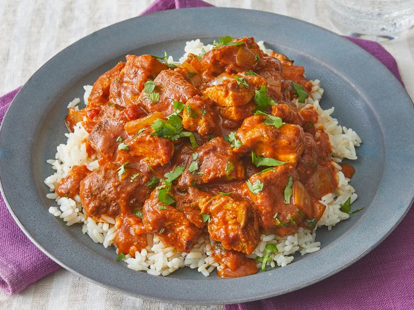

Chicken Tikka Masala

Description
Chicken tikka masala made easy with this great-tasting recipe — simply
marinate chicken breast in yogurt and spices and then simmer in a tomato
cream sauce. Serve with rice or warm pita bread.
Ingredients
- 1 cup of yogurt
- 1 tbsp of lemon juice
- 4 tsp of ground cumin, divided
- 1 tsp of ground cinnamon
- 2 tsp of cayenne pepper
- 2 tsp of freshly ground black pepper
- 1 tbsp of minced fresh ginger
- 2 tsp of salt, divided or more to taste
- 3 boneless, skinless chicken breasts, cut into bite-size pieces
- 4 long skewers
- 1 tbsp of butter
- 1 clove of garlic, minced
- 1 jalapeno pepper, finely chopped
- 2 tsp of paprika
- 1 (8 oz) can of tomato sauce
- 1 cup of heavy cream
- 1/4 cup of chopped fresh cilantro
Steps
-
Combine yogurt, lemon juice, 2 teaspoons cumin, cinnamon, cayenne, black
pepper, ginger, and 1 teaspoon salt in a large bowl.
- Stir in chicken, cover, and refrigerate for 1 hour.
- Preheat a grill for high heat.
-
Lightly oil the grill grate. Thread chicken onto skewers, and discard
marinade.
- Grill until juices run clear, about 5 minutes on each side.
-
Melt butter in a large heavy skillet over medium heat. Sauté garlic and
jalapeño for 1 minute. Season with remaining 2 teaspoons cumin, paprika,
and remaining 1 teaspoon salt. Stir in tomato sauce and cream. Simmer on
low heat until sauce thickens, about 20 minutes.
-
Add grilled chicken, and simmer for 10 minutes. Transfer to a serving
platter, and garnish with fresh cilantro.
- Serve over rice.